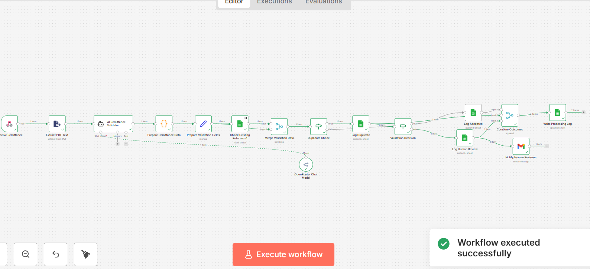
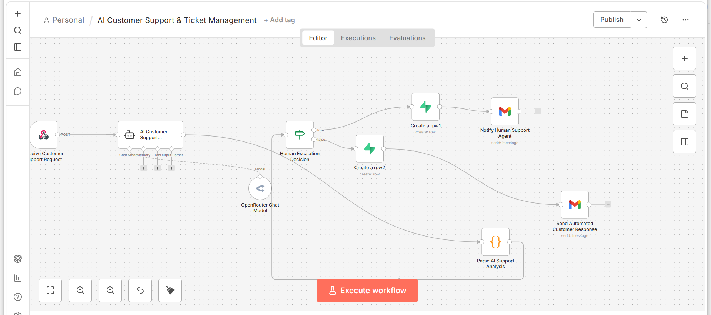
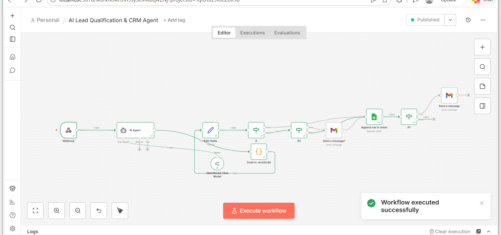

Welcome to My Portfolio!
Professional Scrum Master (PSM I) | AI Automation Specialist | Front-End Developer
Professional Scrum Master (PSM I) | AI Automation Specialist | Front-End Developer
I am a Professional Scrum Master (PSM I) with project experience involving Agile, web development, and AI automation. I have practiced Product Backlog management, Sprint Planning, Sprint tracking, Reviews, Retrospectives, and continuous improvement. I also build practical n8n workflows using AI agents, webhooks, APIs, Google Sheets, and email integrations.
Sprint Planning, Sprint Reviews, Retrospectives, Product Backlog management, and Scrum events.
Semantic HTML, styling, responsive layouts, and user interfaces.
DOM manipulation, event handling, and interactive website features.
Solidity, smart contracts, Hardhat, React, and Ethers.js.
n8n workflows, AI agents, webhooks, APIs, and workflow automation.
Google Sheets, Gmail, HTTP requests, webhook triggers, and data processing.

Issued by: Scrum.org
Certification demonstrating knowledge of Scrum principles and practices.
View CertificateCreated and refined Product Backlog items and maintained clear priorities.
Defined Sprint Goals and organized Sprint Backlog work.
Used Jira and Agile metrics to monitor Sprint progress.
Practiced Sprint Reviews, Retrospectives, and Daily Scrum.

An Agile e-commerce project organized and managed using Scrum and Jira.
GitHub
A blockchain staking DApp project documented through Scrum planning, Sprint tracking, Reviews, and Retrospectives.
GitHub
An n8n automation for processing remittance PDFs, validating payment data, detecting duplicates, routing documents for human review, logging outcomes, and sending email notifications.
GitHub
AI-powered customer support automation using n8n, AI agents, Supabase, and a ticket management dashboard.
GitHub
An AI-powered n8n workflow that analyzes Sprint Retrospective feedback and generates structured insights and action items.
GitHub
An n8n automation that qualifies leads as Hot, Warm, or Cold, records results in Google Sheets, and sends email notifications.
GitHubInterested in working together? Feel free to connect with me.
Email Me GitHub